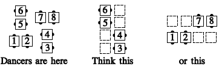
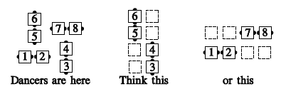
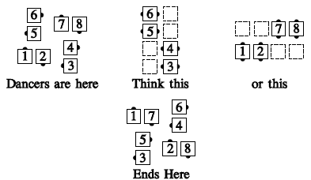

A Phantom is a non-existent dancer with whom you may be asked to work. A Phantom formation (e.g., after Heads Wheel Thru, Swing Thru, Heads Hinge) has the dancers arranged as shown below. Some of the dancers are in lines at the head, and some are in lines at the side. Each dancer acts as though he or she were in parallel waves or lines with all the Phantom positions occupied by real dancers.

It is also possible to have a phantom formation where some of the dancers feel like they're in columns (as below). However, this variation is not appropriate for use at C-1.

Consider Phantom Circulate:

Common applications include Couples Circulate, Cross Over Circulate, Tag the Line, Turn and Deal, Wheel and Deal, Ferris Wheel, Acey Deucey, Trade the Wave, Recycle, Ah So, Circulate, Trade Circulate.
© Copyright 1983, 1986-1988, 1995-2012 Bill Davis, John Sybalsky and CALLERLAB Inc., The International Association of Square Dance Callers. Permission to reprint, republish, and create derivative works without royalty is hereby granted, provided this notice appears. Publication on the Internet of derivative works without royalty is hereby granted provided this notice appears. Permission to quote parts or all of this document without royalty is hereby granted, provided this notice is included. Information contained herein shall not be changed nor revised in any derivation or publication.